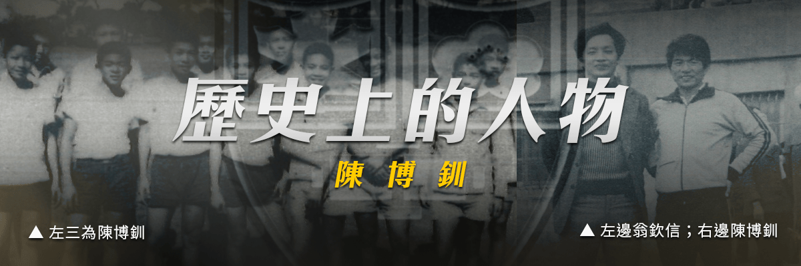
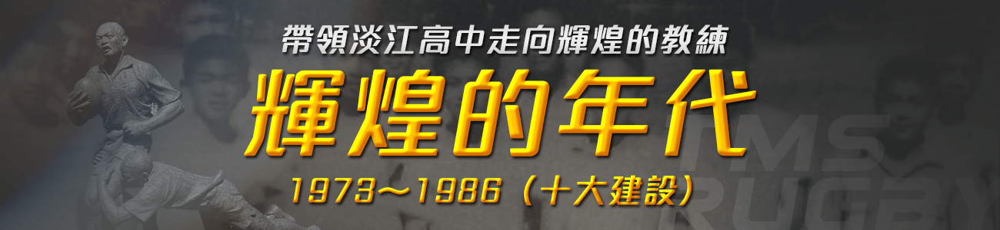
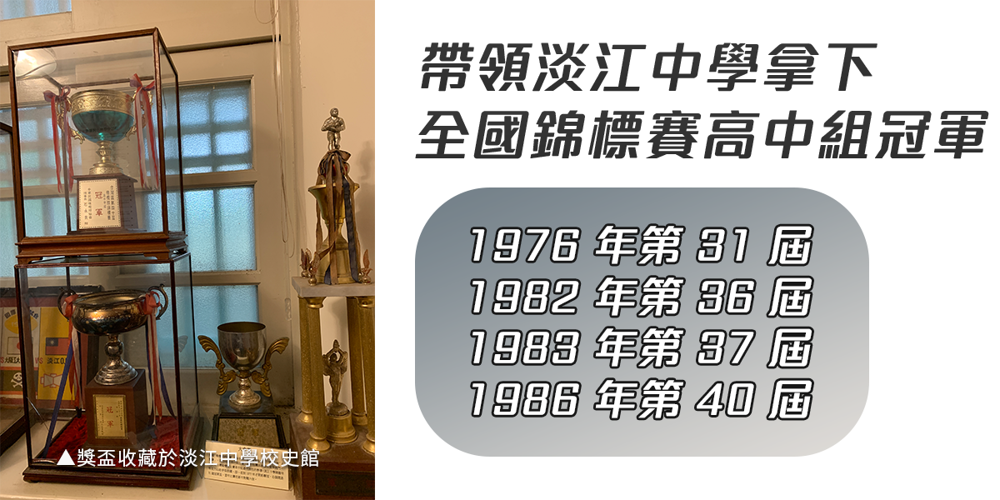
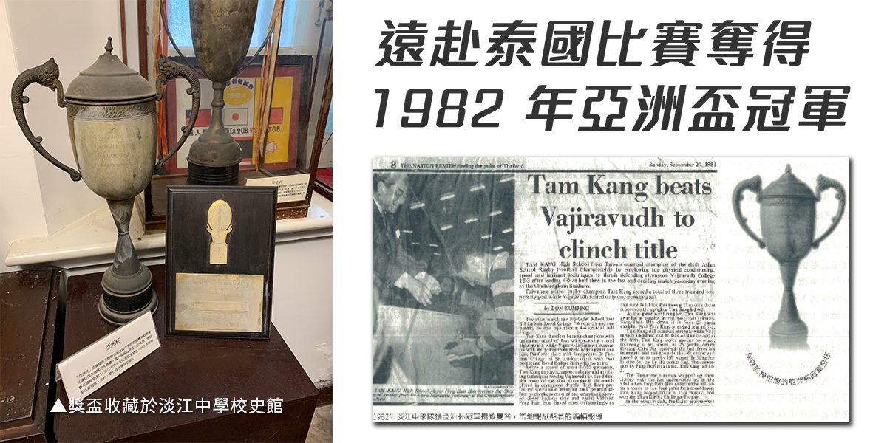
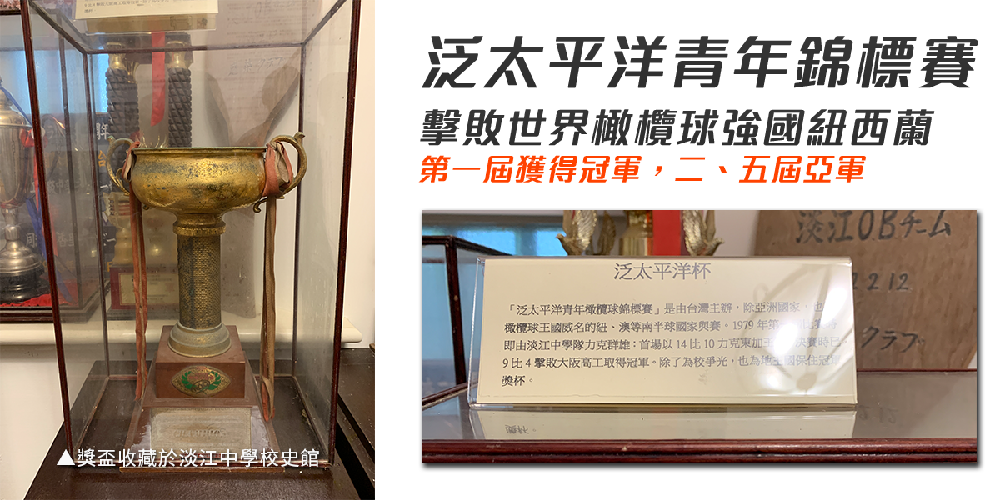

淡江橄欖球名人堂

他人生有三個夢：
一、當一個優秀的運動員，二、當個賢明的教練，三、做一個成功的商人。
陳博釧，1967年進入淡江初中部。每天看著高中部的學長打橄欖球。初三時獲選組成初中校隊參加全國七人制錦標賽。但首戰即敗，輸球後他在看臺上大哭，高中的學長則安慰他：「別難過，高中還有三年可以好好打球，為淡江爭光」。
初中畢業後輟學一年，到父親的煤礦場中當了八個月的礦工。有天，兩位學長坐客運並走了兩個小時的山路來到礦區鼓勵陳博釧回學校打球，並說服了他的父母。那年夏天，他回到了淡江，從高一到球到高三。第22屆全國錦標賽（大會賽）時陳博釧擔任隊長領軍與當時冠軍隊建中隊激戰，最後以 3 比 5 戰敗，他當下就決心將來要回母校協助球隊為淡江拿下全國錦標賽高中組冠軍。




親自挑選球員，紮實的訓練與良好的生活管理，1986年離開母校，追求人生第三個夢 — 做一個成功的商人。